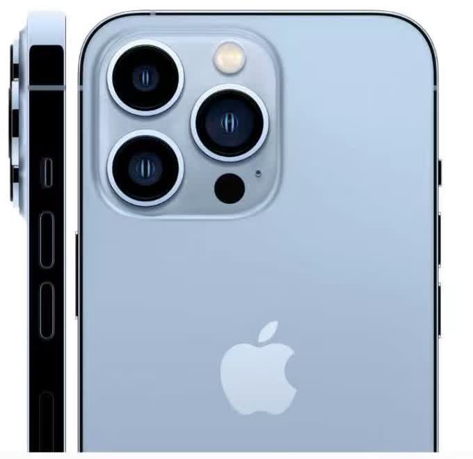
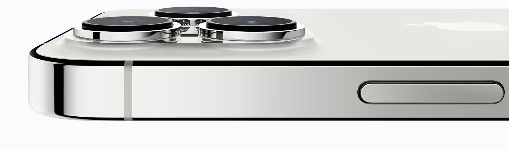
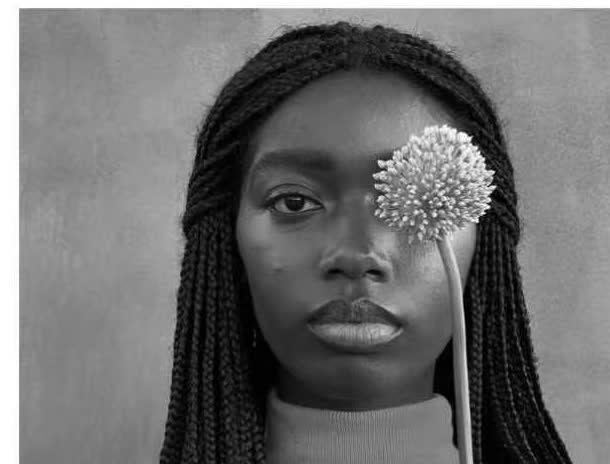
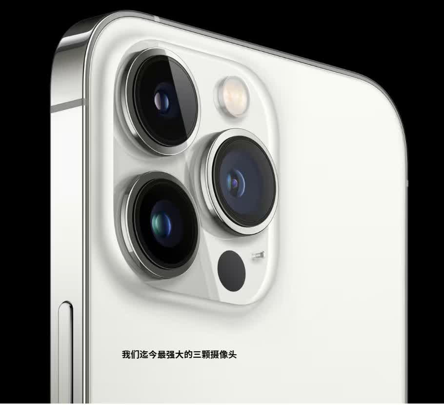

iPhone 13 Pro
Oh. So. Pro.

我们的 专业级摄像头系统 迎
来了迄今最大升级。 凭借可
捕捉更多细节的 新一代硬
件、 带来全新拍照与电影级
拍摄手法的 超智能软件，以
及让这一切成为可能的 惊人
高速芯片。 它将改变你的拍
摄方式。

Whoa.
微距摄影来到
iPhone。
凭借重新设计的镜头和强大的自动对焦系统，全新超广角摄像头最近可在 2 厘米处对焦，让最细微的细节也能呈现震撼效果。把一片叶子拍成抽象艺术，记录毛毛虫的绒毛，放大一滴露珠。微观之美，等你发现。
More
zoom?
Boom.
全新长焦摄像头具备 77 毫米焦距和 3 倍光学变焦，无论是经典人像，还是远距离拍摄更清晰的照片和视频，都非常出色。

长焦支持 3 倍
光学变焦
近景特写更进一步
全系统 6 倍光
学变焦范围
构图选择前所未有地丰富
A snapshot of
each camera.
